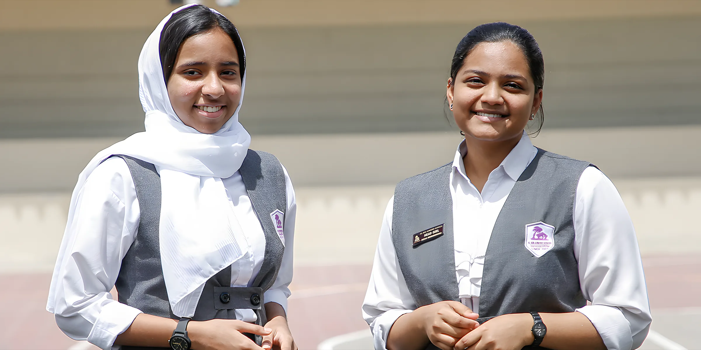
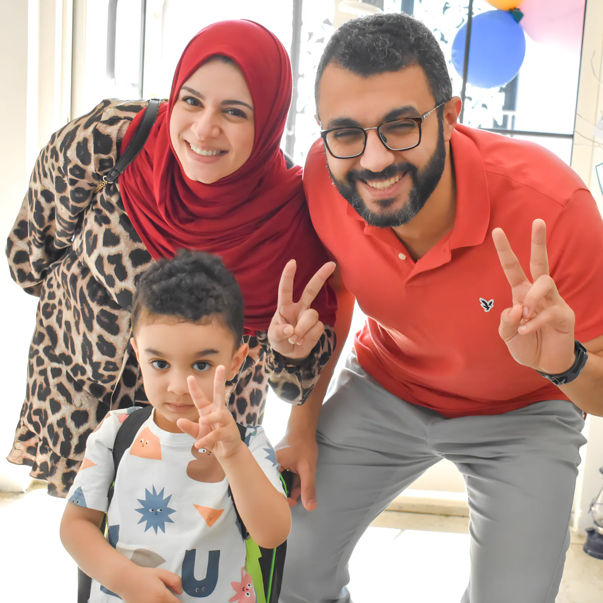

Our schools and admissions and admissions
The British System and the Indian System share one campus in Falaj Hazza, each in its own wing. Al Ain Juniors Nursery, where we began in 1989, takes children from 2 to 4. Here is what each one teaches, the school day, and how to apply.



British System
A Cambridge-accredited British school from Kindergarten to Grade 12. Teaching is built on active learning and problem solving, and students sit iGCSEs and GCE A Levels, fully accredited by Cambridge International Examinations, UK.
We keep the subject list under review so it follows what our students need for university. On 21 October 2026 we held our Achievers Appreciation Ceremony for the IGCSE, AS and A Level toppers of the June exams.
- CurriculumCambridge International, accreditation AE187
- GradesKG1 to Grade 12 (FS2 to Year 13)
- ExamsIGCSE, AS Level, A Level
- FS2 to Year 1Mon to Thu 7:20am to 1pm, Fri 7:20 to 10:45am
- Year 2 to 13Mon to Thu 7:15am to 2:15pm, Fri 7:15 to 10:45am
- LeadershipMr Suhail Chayilode, Vice Principal (Secondary); Mrs Cecily Davies, Vice Principal (Primary)


Indian System
A CBSE-affiliated school from Kindergarten to Grade 12. Alongside the textbooks, every class gets the school's own workbooks, and learning is backed by audio-visual aids, experiments and project work. Exhibitions and field trips are part of the course, not extras.
Our first Grade 12 batch sat the CBSE board exams in 2004. This October, Aliya Nujum Navas (Grade 12) represented the UAE in javelin at the CBSE National Sports Meet and finished 8th.
- CurriculumCBSE, affiliation 6630040
- GradesKG to Grade 12
- Grades 1 to 12Mon to Thu 7:30am to 2:15pm, Fri 7:30 to 10:40am



Al Ain Juniors Nursery
"Where learning is play and play is learning." The nursery is where the school began in 1989, and it has offered affordable care and early education in Al Ain ever since.
We follow the British Early Years Foundation Stage, kept flexible enough to suit each child. The nursery has recently moved into a bigger building in the heart of Al Ain. Come and see it, and meet the teachers and carers.
- Ages2 to 4 years
- CurriculumBritish EYFS
- This termOpen Day, Splash Day and Messy Fun Day
How admission works works
Admissions are done online through our admissions portal, from KG1 to Grade 12. Places are limited and given on availability, so start as early as you can.
Apply online
Choose British System or Indian System admissions. Enter your child's details and upload the documents. Your email becomes the username for the application.
Track the application
You get a confirmation email with a login to follow the application. Once it's submitted, the details can't be edited, so check them first.
Meet us, or sit the baseline
Kindergarten: an informal interview session at school. Grades 1 to 10: a written baseline assessment (general aptitude, maths and literacy), then an interview with the Vice Principal. Grades 11 and 12: based on recent Cambridge results and an interview.
Seat offered, or the waiting log
If a grade is full, your enquiry goes onto the waiting log and we contact you when a seat opens.
Who gets a seat first
- Siblings of current students
- Applicants with complete documents
- Baseline assessment results are taken into account
ADEK age rule
| Grade | Age on 31 August |
|---|---|
| Junior KG | 4 years |
| Senior KG | 5 years |
| Grade 1 | 6 to 8 years |
Fees, uniforms and books and books
The ADEK-approved fee structures for 2026–27 are published for each school. Pay online through the Edunation app, or by bank transfer for the nursery.
AJ Group Stores (uniforms and books) is open to parents Mon to Thu 10:30am to 6pm and Sun 9am to 12:30pm. It is closed 27 to 29 October and reopens on 1 November 2026.
Not sure which system? Ask us. Ask us.
Call the school office and we'll talk you through the British and Indian systems, the fees and what seats are open this year.